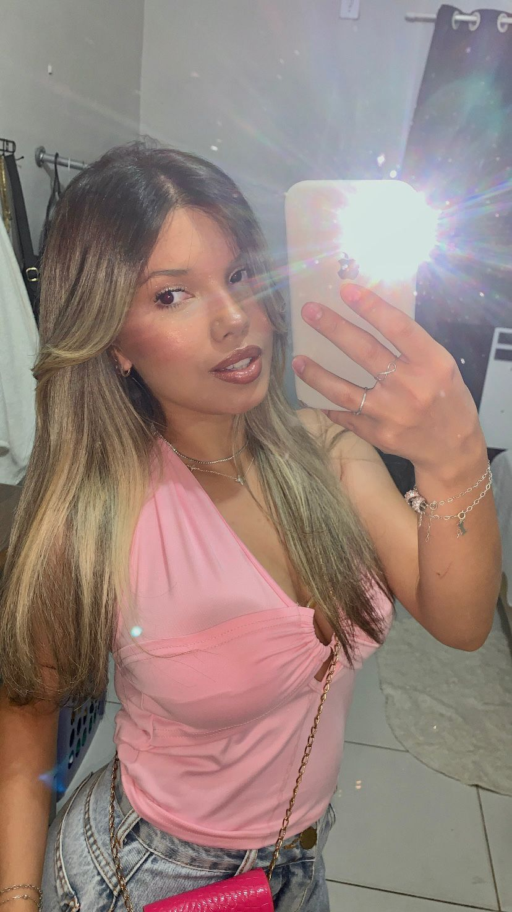
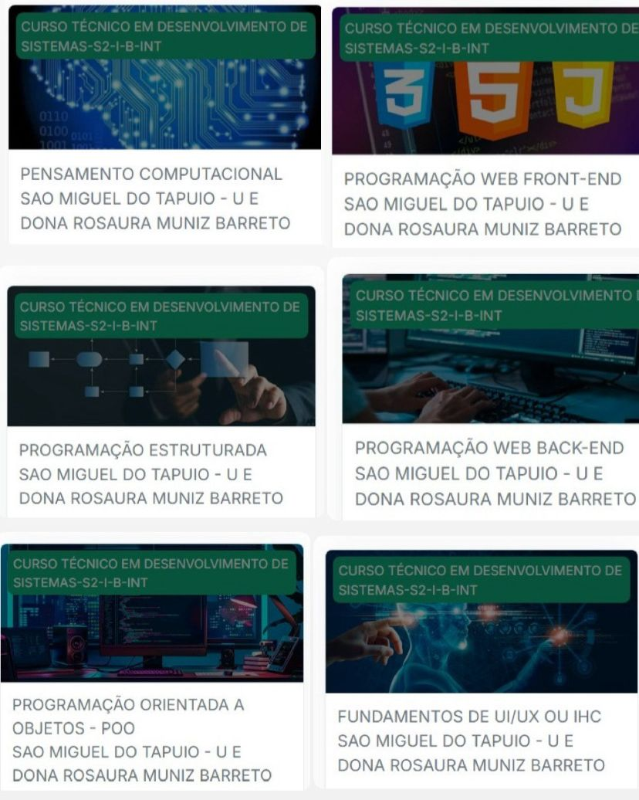

Olá,me chamo Ana Luyza
nasci em São Miguel do tapuio, no interior do piauí, e fui criada em um interior chamado Mato Escuro.Tenho 17 anos e gosto bastante do meu curso de Desenvolvimento de Sistema.
Autor:Luyza
Sou uma pessoa extrovertida, comunicativa e acredito que, com esforço, dedicação e uma boa dose de otimismo, é possível transformar sonhos em realidade e até mesmo mudar o mundo.
Autor:Ana Luyza Lista dos cursos e plataformas concluídas durante os estudos. Amo praticar esportes, especialmente musculação, pois acredito que cuidar do corpo também fortalece a mente. Sonho em me formar em Biomedicina e conquistar uma carreira de sucesso, contribuindo para a melhoria da saúde e da vida das pessoas. Autor:Ana Luyza Objetivos acadêmicos para o ano. Plataformas finalizadas

Um pouco mais sobre mim
Minhas metas
Assim sou eu!